Mockups only, nothing in atuned_src is touched. Every picture is the built app (source.html) with the readings block of the left rail swapped for the new one, figures read from the engine. This goes back to the rail's own grammar and changes only what you asked to change: one two-colour bar for CQ and DQ with a moving edge, and every other reading on its own horizontal line with the mark inside the line.
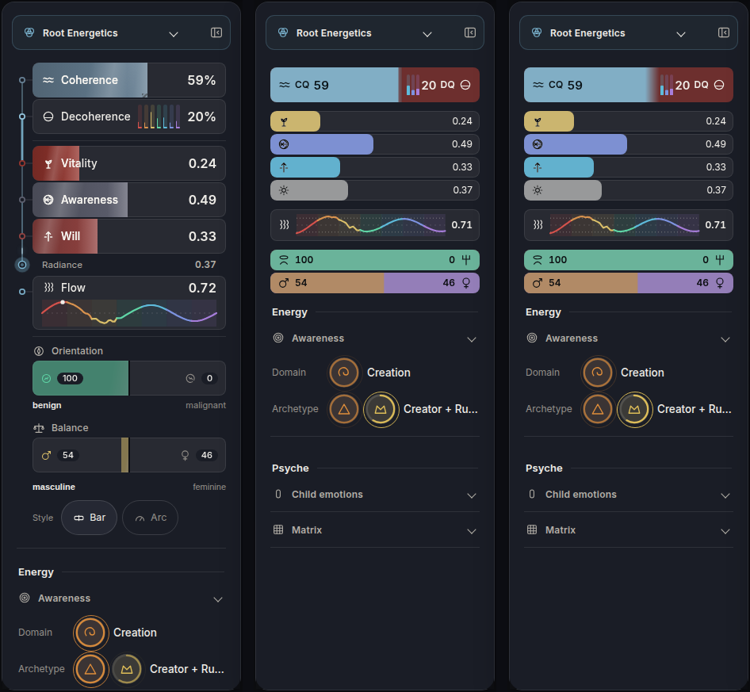
What changed, and what did not.
cqRange in ui/personas.js, on the drift renderPol2 writes. The bar is a hundred points wide, so the range in points is the range in per cent of the bar. Nothing is converted to pixels.Both edges run live on the Compass's own drift. The fills carry the rail's own travelling light. Flow is a live sine. Open live.html for the lighting switch.
Eight frames, 1.4 seconds apart, of the pair alone. The top row is today's Coherence and Decoherence rows photographed in the real app at the same eight moments: nothing at the edge moves. Edge positions are printed over each frame, read from the same function the bar draws with.
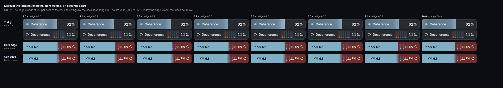
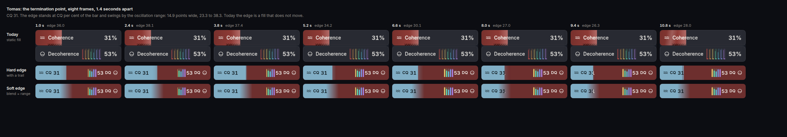
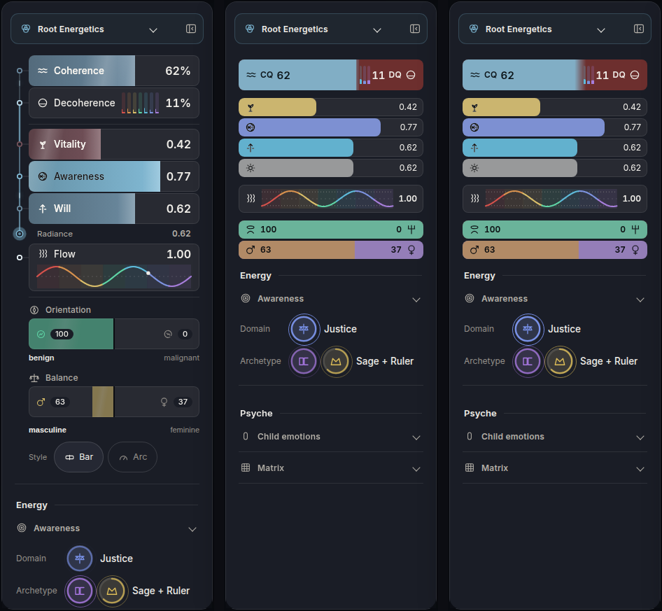
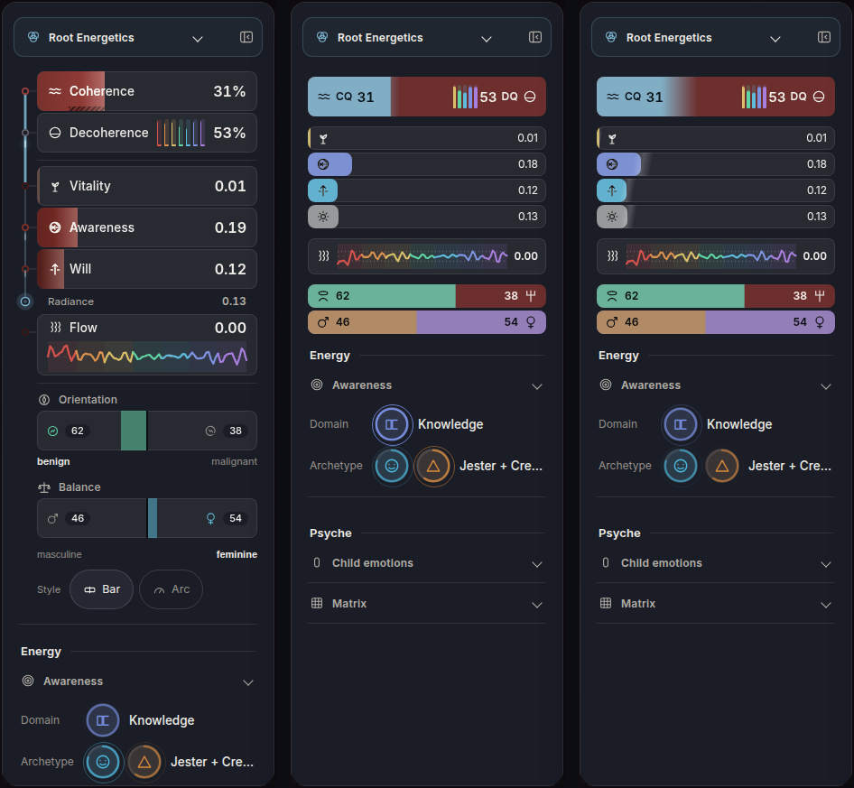
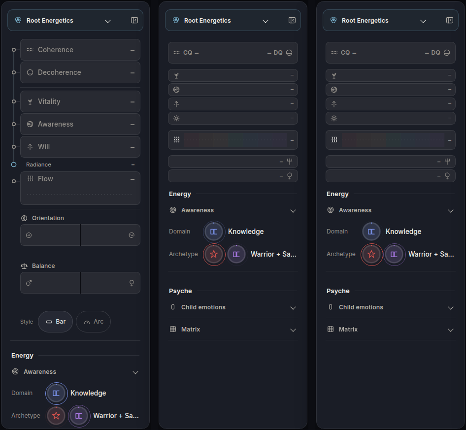
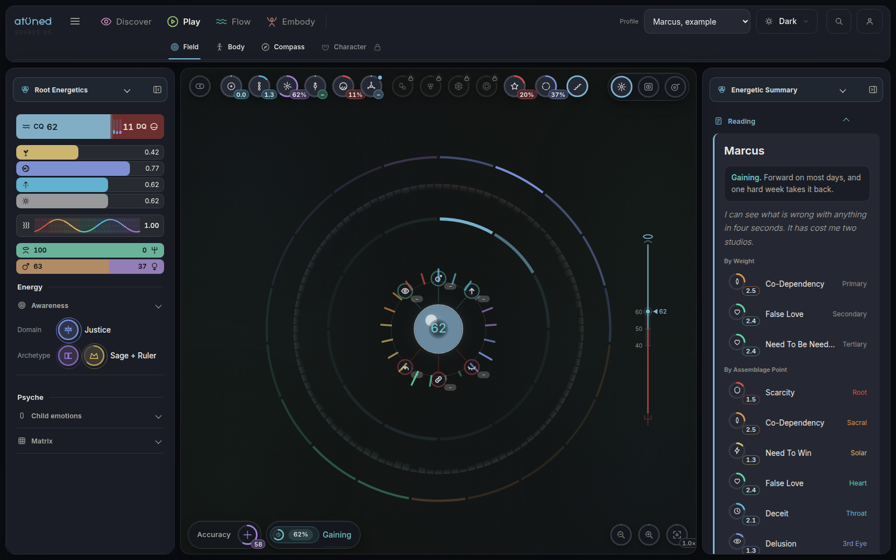
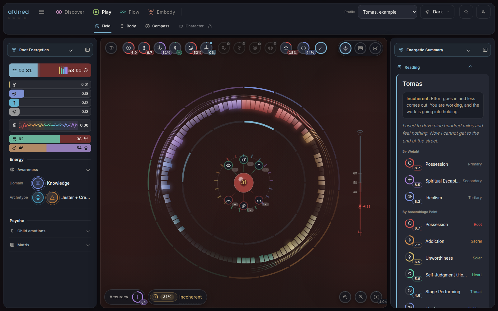
Today the closed rail is a single fold button. The mock carries the same lines in the 58 pixel column, 44 wide, marks only and no figures, with the edge still moving. It is an addition, and it can come out.
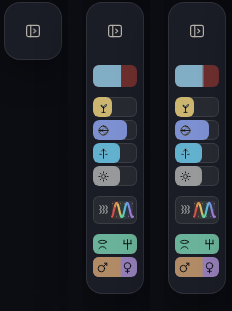
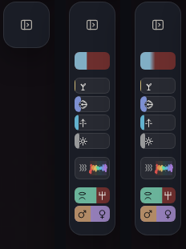
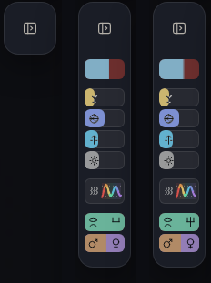
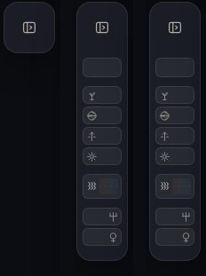
The rail stacks under the picture. The whole rail, readings and Energy and Psyche, fits one screen where today the readings alone are most of one.
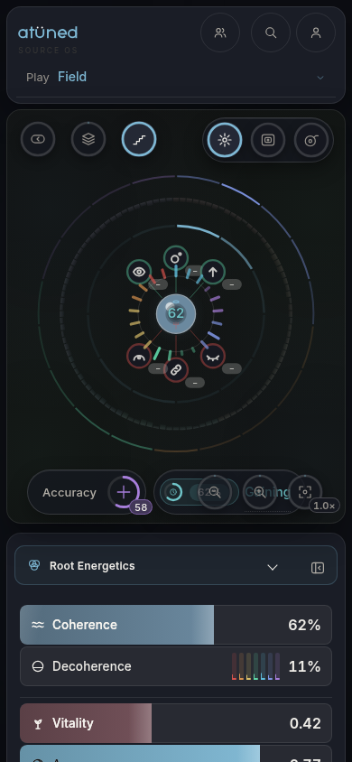
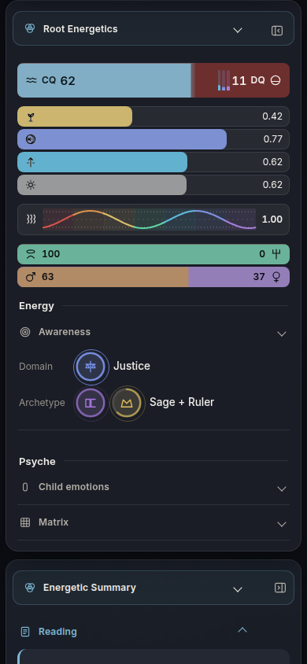
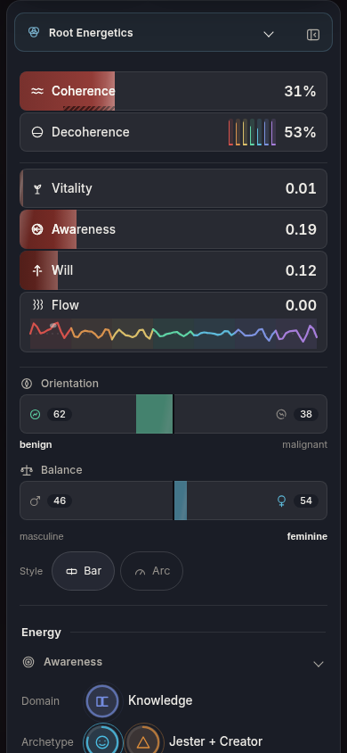
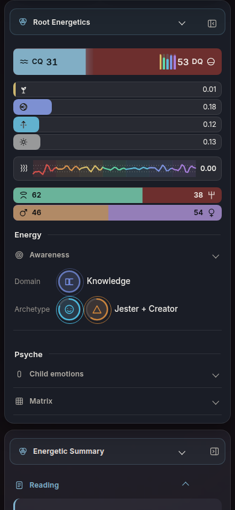
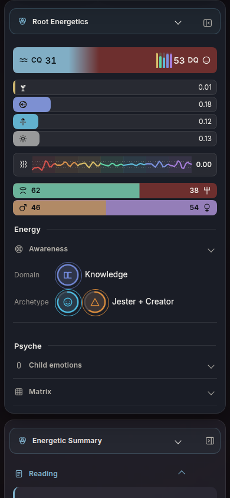
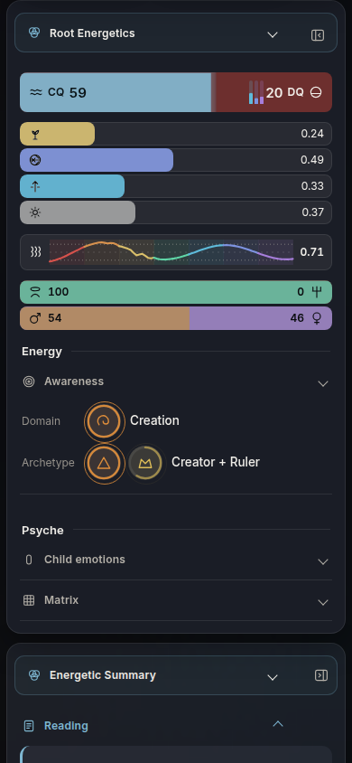
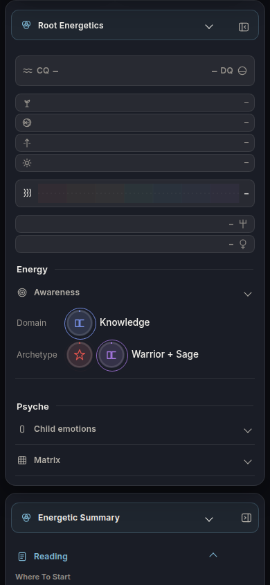
Same tokens, different grounds. CQ deepens to the Snow accent and DQ goes pale: the pair swaps which side is dark so the edge still has the largest value step on the page. Today, hard, soft.
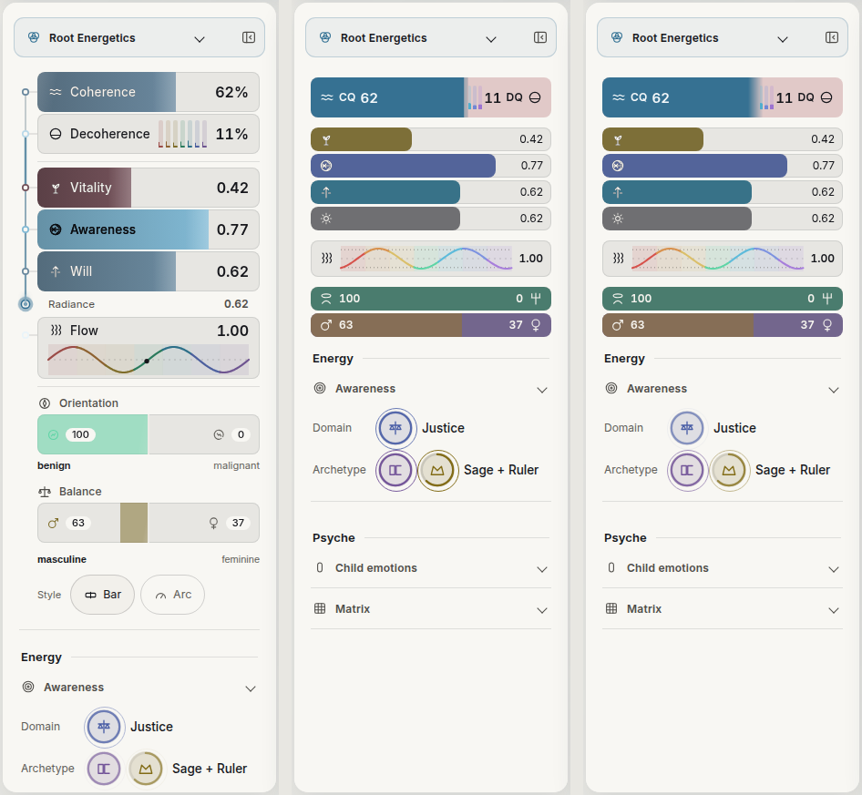
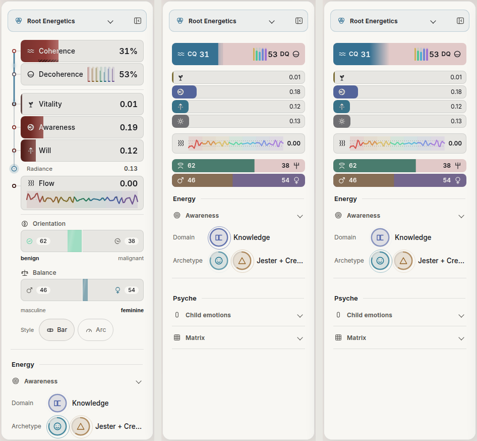
| At 1600 by 1000, Marcus | Today | Lines |
|---|---|---|
| Readings block, top of the first bar to the foot of the last | 617 px | 285 px, 8 lines |
| Foot of the Archetype row | 997 of 1000 | 669, with Psyche and Matrix in view below it |
| Line heights | 44 each, Flow 68, Orientation and Balance a bar and a caption row each | pair 44, Flow 40, six lines at 26 |
| Same block with every line held to the 44 floor | about 397, still 36 per cent under today |
The 26 pixel lines are under the 44 pixel tap floor. See the questions in the report: the floor and the stack cannot both hold unless the lines stop being separate buttons.
The large fields are mixed toward a mid grey, 84 per cent seat on the three readings and 58 to 60 on the two split bars, because saturation, not hue, is what makes a surface read calm. High on any of them is never red. The alarm token is not used anywhere in the block.
make-data.js reads the four people's readings out of the built engine into data.json.make.js opens source.html, empties the readings from the left rail, mounts rail-lines.js in the same place and photographs it. make-frames.js and make-crops.py do the strips and the side by sides.